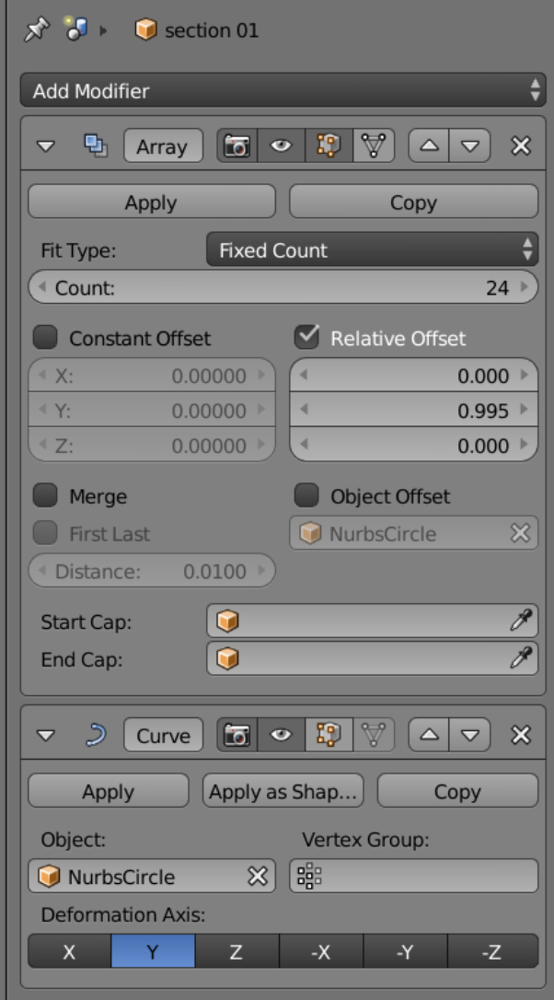
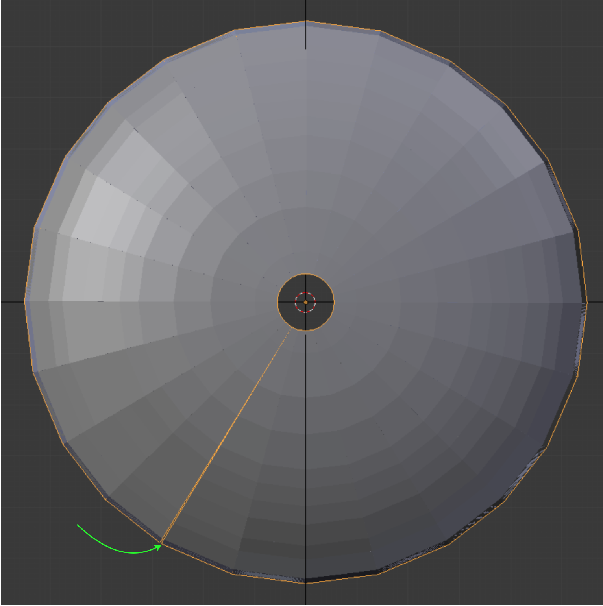
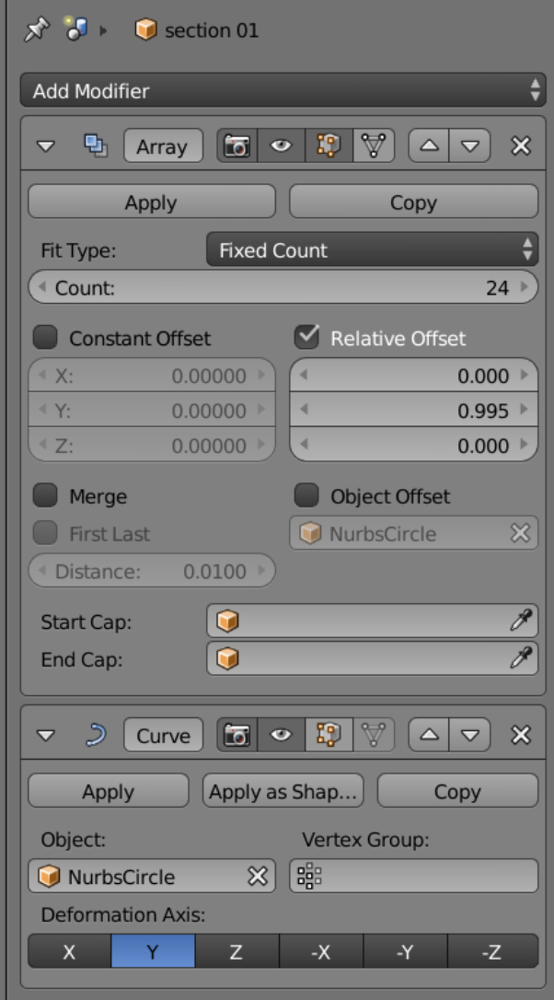
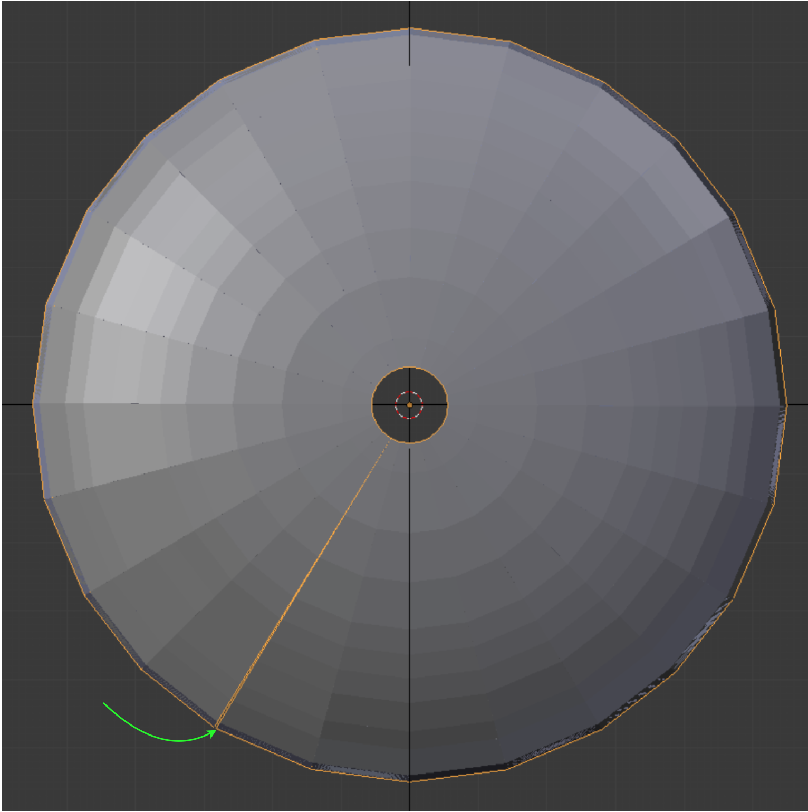

Demo 22
This object is a driver head; the model can be found in the INRIA model repository, Sports section, as a .mesh file, and is opened in Gmsh, then saved as a .stl file and imported into Blender using Blender ’ s .stl import script. Its title is “club,” (See References). We give the usual Tris-to-Quads and Partial Dissolve commands.
This object is a driver head; the model can be found in the INRIA model repository, Sports section, as a .mesh file, and is opened in Gmsh, then saved as a .stl file and imported into Blender using Blender ’ s .stl import script. Its title is “club,” (See References). We give the usual Tris-to-Quads and Partial Dissolve commands.
A golf club head may not greatly resemble a cylinder, but we choose to work the problem as if it did. Half of the revolved array is shown at right.
One segment of the 24 in the array can be seen here in Object mode. The back side of the segment consists of flat faces, and the forward side the ribs for the faces in the next segment forward. After trying some other alternatives, we find that the nurbs circle behaves best for this task.
In Edit mode we adjust the width of the segment along the y-axis, using the ‘g’ key with numerical input, watching (orange arrow) as the accumulation of length causes the end point, as viewed in Object mode, to eventually match the start point well (green arrow). The last joint is then welded by hand.
 



We use a sectioned circle to create 24 section outlines, one for each of the division plates in the array. It is important to position the center of the cut with forethought, so that there is sufficient room for the scaling that will take place on all the sections. The collection of connected edges forming the templates is shown below.
We see above the view of a section plate ready to be scaled. We make sure that the view is perpendicular to the section plate, and that the 3D cursor is the current pivot point. After all faces are selected and scaled within the template, the outer points are slid along the original edges to their required positions to keep a concentric theme in the edges on the outer surface.
An important part of our approach consists of snapping points to the original model. We have found that Blender can get confused when snapping to a complex object, and therefore we cut the model into pieces, placing each in turn on the mesh and snapping to its surface. We snap points to a closest ‘volume’, as indicated in the icons shown. On the active layer, we allow only one non-mesh object, which is then interpreted as target. It is best to continually move the mesh to keep the snap direction aligned to the direction of the view. (Pressing the ‘g’ key activates the snap.)

The current snap target can be given a transparent texture, which helps us to see what is happening. A change of reflected light on a face may indicate it has ‘popped out’, but a large disorganized change in appearance means we have slipped off the target surface and need to press the Escape key to abort the snap.
In creating the hosel, we manage the face patterns so that they reflect back on themselves (blue), which prevents propagation of unnecessary detail throughout the main mesh. One central edge boundary does carry through (red), and is necessarily incorporated into the main body.
In golf club parlance, the area of attachment between head and shaft is called the ‘hosel’. At right is seen a crude 2D hosel together with a low-resolution mesh, after the first overall snapping. It is useful to always maintain the roughest resolution possible consistent with the tasks to be accomplished during a particular stage.
The axis of the hosel is not aligned with a major global axis, so extrusion is problematical. By selecting a checkerboard pattern and using the ordinary Extrude command, we can get extrusion perpendicular to the original faces, and are left with approximately half of the faces to complete along the extrusion path.
All the points are snapped to the model. But with its randomly created surface, the model lacks definition at its edges. We therefore define a subset of points, a ring, along which we will bend our edges to make the boundary of the club’s contact face more regular. This ring, a separate object, is used for visual comparison of point position.
One important thing that Gmsh does for us is to align all the face normals. When the mesh enters Gmsh with final geometry revisions present, but with randomly directed normals, it appears as shown.
Finite element solvers do not generally care about normals, but Paraview does.
Finite element solvers do not generally care about normals, but Paraview does.
It is desirable to control the mesh density and keep it from getting out of hand. A Gmsh dialog box with selections as shown can deliver a .vtk mesh to Paraview without increasing its density. (Note: in spite of a number of iterations, the ‘smoothing steps’ take place so quickly that we doubt anything really happens.) Pressing ‘3D’ from the GUI mesh menu creates the mesh.
The Scaled Jacobian mesh quality, with a minimum of .527, meets the required Verdict standards.
The final mesh contains 31,840 elements and 34,651 nodes.
Note that the resolution was increased in the club’s contact area, using the cutting and face filling method described in Demo 14.
Note that the resolution was increased in the club’s contact area, using the cutting and face filling method described in Demo 14.
References:
• Geuzaine, C. and Remacle, J-F. (2017). Gmsh 2.16.0 [Computer software]
• CSC - IT Center for Science. (2016). Elmerfem-CSC 8.2-20170525 [Computer software]
• Stichting Blender Foundation. (2018). Blender 2.79b [Computer software]
• Kitware, Inc. (2013). Paraview 4.0.1 [Computer software]
• Nextwave Software Solutions SRL. (2016). Snappy 1.4.7 (116) [Computer software]
• Free Pascal Lazarus Project. (2018). Lazarus 1.8.4 [Computer software]
• University of Iowa, Center for Computer-Aided Design. (2008). IA-FEMesh 1.0 [Computer software]
• University of Utah, Musculoskeletal Research Laboratories. (2016). Febio Preview 1.19 [Computer software]
• Dhondt, G. and Wittig, K. (2016). Calculix 2.11 [Computer software]
• Schneiders, R. (2000). Algorithms for Quadrilateral and Hexahedral Mesh Generation. MAGMA Gießereitechnologie GmbH. Aachen, Germany [Document]
• freecadweb.org. (2016). FreeCAD .14 [Computer software]
• INRIA Gamma Team Research Database Website Collections. (2013). 922_pump_carter [3d Model]
• Wendling, C., Treleaven, N., et al. (2014). Geany 1.24.1 [Computer software]
• Visualization Virtual Services Aim Shape Shape Repository (2007). Pump Carter [3d Model]
• Stimpson, C., Ernst, C., et al. (2007). The Verdict Library Reference Manual [Document]
• OneMinute Video Tutorials. (2016). “How to Straighten Inclined Objects in Blender.” YouTube NEUa1IA7NBQ [Video]
• INRIA Gamma Team Research Database Website Collections. (2005). DEMO10 [3d Model]
• Schöberl, Joachim (2009). Netgen 4.9.11 [Computer software]
• OpenFOAM Foundation (2016). OpenFOAM 4.1 [Computer Software]
• INRIA Gamma Team Research Database Website Collections. (2005). Aries155 [3d Model]
• INRIA Gamma Team Research Database Website Collections. (2002). Y7034 [3d Model]
• INRIA Gamma Team Research Database Website Collections. (2002). Y7923_Gear5 [3d Model]
• INRIA Gamma Team Research Database Website Collections. (2006). fan_1 [3d Model]
• INRIA Gamma Team Research Database Website Collections. (2008). bracket1 [3d Model]
• INRIA Gamma Team Research Database Website Collections. (2008). gancho [3d Model]
• CG Masters. (2015). “Align 2 Faces - Advanced Snapping Blender Tutorial.” YouTube Gc8BekthXAQ [Video]
• Rethaller, Tom. (2013). Align by Faces 2.2 [Blender Add-On]
• INRIA Gamma Team Research Database Website Collections. (2005). rockerarm25 [3d Model]
• INRIA Gamma Team Research Database Website Collections. (2005). bracket [3d Model]
• INRIA Gamma Team Research Database Website Collections. (2008). Crank3D [3d Model]
• INRIA Gamma Team Research Database Website Collections. (2008). Ghs3dDS [3d Model]
• INRIA Gamma Team Research Database Website Collections. (2005). Y3492 [3d Model]
• INRIA Gamma Team Research Database Website Collections. (2008). bielle_tout [3d Model]
• INRIA Gamma Team Research Database Website Collections. (2004). club [3d Model]
• Bollenbach, G. (2018). Lifted 1.1 [Computer software]
NOTE: The INRIA database repository of 3D models seems to have been removed from the internet. We regret the absence of this valuable resource, while meanwhile hoping for its eventual return.
• Geuzaine, C. and Remacle, J-F. (2017). Gmsh 2.16.0 [Computer software]
• CSC - IT Center for Science. (2016). Elmerfem-CSC 8.2-20170525 [Computer software]
• Stichting Blender Foundation. (2018). Blender 2.79b [Computer software]
• Kitware, Inc. (2013). Paraview 4.0.1 [Computer software]
• Nextwave Software Solutions SRL. (2016). Snappy 1.4.7 (116) [Computer software]
• Free Pascal Lazarus Project. (2018). Lazarus 1.8.4 [Computer software]
• University of Iowa, Center for Computer-Aided Design. (2008). IA-FEMesh 1.0 [Computer software]
• University of Utah, Musculoskeletal Research Laboratories. (2016). Febio Preview 1.19 [Computer software]
• Dhondt, G. and Wittig, K. (2016). Calculix 2.11 [Computer software]
• Schneiders, R. (2000). Algorithms for Quadrilateral and Hexahedral Mesh Generation. MAGMA Gießereitechnologie GmbH. Aachen, Germany [Document]
• freecadweb.org. (2016). FreeCAD .14 [Computer software]
• INRIA Gamma Team Research Database Website Collections. (2013). 922_pump_carter [3d Model]
• Wendling, C., Treleaven, N., et al. (2014). Geany 1.24.1 [Computer software]
• Visualization Virtual Services Aim Shape Shape Repository (2007). Pump Carter [3d Model]
• Stimpson, C., Ernst, C., et al. (2007). The Verdict Library Reference Manual [Document]
• OneMinute Video Tutorials. (2016). “How to Straighten Inclined Objects in Blender.” YouTube NEUa1IA7NBQ [Video]
• INRIA Gamma Team Research Database Website Collections. (2005). DEMO10 [3d Model]
• Schöberl, Joachim (2009). Netgen 4.9.11 [Computer software]
• OpenFOAM Foundation (2016). OpenFOAM 4.1 [Computer Software]
• INRIA Gamma Team Research Database Website Collections. (2005). Aries155 [3d Model]
• INRIA Gamma Team Research Database Website Collections. (2002). Y7034 [3d Model]
• INRIA Gamma Team Research Database Website Collections. (2002). Y7923_Gear5 [3d Model]
• INRIA Gamma Team Research Database Website Collections. (2006). fan_1 [3d Model]
• INRIA Gamma Team Research Database Website Collections. (2008). bracket1 [3d Model]
• INRIA Gamma Team Research Database Website Collections. (2008). gancho [3d Model]
• CG Masters. (2015). “Align 2 Faces - Advanced Snapping Blender Tutorial.” YouTube Gc8BekthXAQ [Video]
• Rethaller, Tom. (2013). Align by Faces 2.2 [Blender Add-On]
• INRIA Gamma Team Research Database Website Collections. (2005). rockerarm25 [3d Model]
• INRIA Gamma Team Research Database Website Collections. (2005). bracket [3d Model]
• INRIA Gamma Team Research Database Website Collections. (2008). Crank3D [3d Model]
• INRIA Gamma Team Research Database Website Collections. (2008). Ghs3dDS [3d Model]
• INRIA Gamma Team Research Database Website Collections. (2005). Y3492 [3d Model]
• INRIA Gamma Team Research Database Website Collections. (2008). bielle_tout [3d Model]
• INRIA Gamma Team Research Database Website Collections. (2004). club [3d Model]
• Bollenbach, G. (2018). Lifted 1.1 [Computer software]
NOTE: The INRIA database repository of 3D models seems to have been removed from the internet. We regret the absence of this valuable resource, while meanwhile hoping for its eventual return.